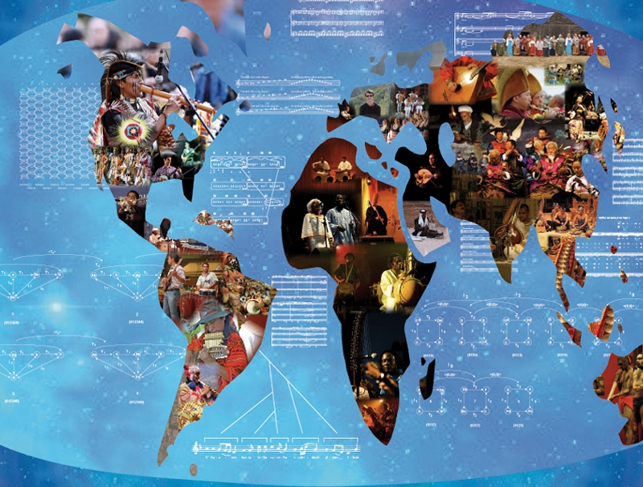

Guide to the world of music.
Home
World Music is music that is from different places around the world. It is music that has developed over a long time to be something that is unique to a particular culture, religion or country. It has very significant importance to a lot of different places due to the uniqueness of each type of world music. Some examples of world music is Celtic Folk, Klezmer (which is a type of jewish music) and Gamelan music.
Music has formed its own culture as well as develop ther cultures. Music was used in many cultures around the world for various purposes. The main purpose music was used was for celebration this is very evident in Celtic culture.